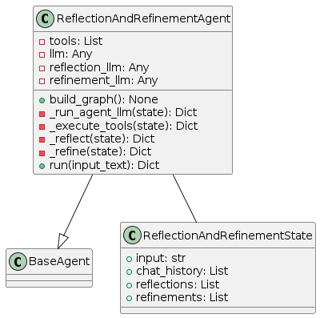
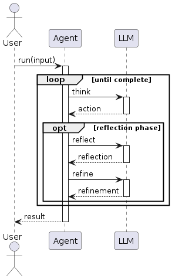
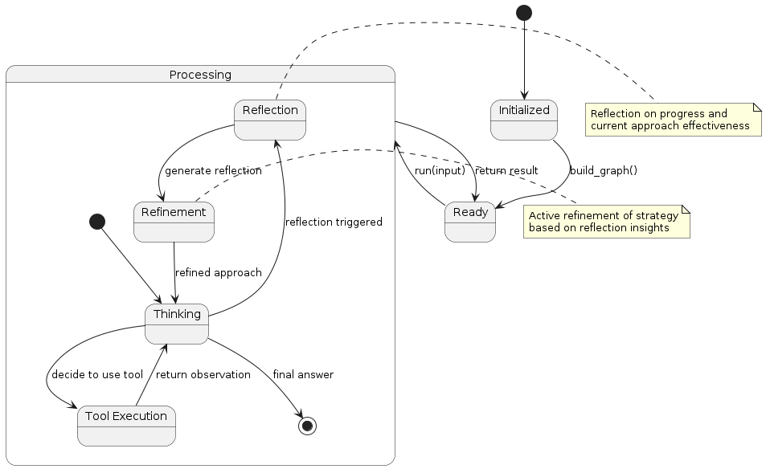

Reflection and Refinement Pattern
Overview
The Reflection and Refinement pattern extends the basic Reflection pattern by adding an explicit refinement phase. This pattern focuses on:
Execution: Standard reasoning and action execution
Reflection: Periodic analysis of progress and approach
Refinement: Explicit improvement of strategies based on reflections
Adaptation: Implementing refined approaches in subsequent execution
The key innovation is the structured refinement step that translates reflective insights into concrete improvements to the agent’s approach.
Diagrams
Class Structure

The Reflection and Refinement pattern is implemented through:
ReflectionAndRefinementState: Extends the basic agent state with reflections and refinements
ReflectionAndRefinementAgent: Implements methods for reflection, refinement, and execution
BaseAgent: The abstract base class from which the agent inherits
Execution Flow

The execution flow follows:
User provides input to the agent
The agent processes the task through standard reasoning and tool execution
At predefined points, a reflection phase is triggered
The agent analyzes its progress and approach
A refinement phase follows, where the agent determines specific improvements
The agent adapts its approach based on these refinements
Execution continues with the improved approach
Final result is returned to the user
State Transitions

The Reflection and Refinement pattern transitions through these states:
Initialized: Agent is created but not yet ready
Ready: Agent is ready to process input
Processing: Agent is actively working on the task
Thinking: Agent is reasoning about what to do next
Tool Execution: Agent is using a tool
Reflection: Agent is analyzing progress and approach
Refinement: Agent is developing improved strategies
Final state is reached when the agent determines a final answer
Use Cases
Complex Problem Solving: For problems requiring iterative improvement
Skill Acquisition: When the agent needs to improve a skill during execution
Adaptive Learning: For agents that need to evolve their strategies
Self-Improving Systems: When continuous improvement is a design goal
Expert Systems: For domains where expertise involves refining approaches
Novel Problem Domains: When initial approaches may be suboptimal
Implementation Guide
Here’s a simple example of using the ReflectionAndRefinementAgent:
from agent_patterns.patterns import ReflectionAndRefinementAgent
from agent_patterns.core.tools import ToolRegistry
from agent_patterns.core.memory import CompositeMemory, ProceduralMemory, SemanticMemory
from langchain.tools import tool
# Define tools
@tool
def search(query: str) -> str:
"""Search for information about a topic."""
return f"Results for {query}: Some relevant information..."
@tool
def analyze(data: str) -> str:
"""Analyze data to extract insights."""
return f"Analysis of '{data}': Several patterns detected..."
# Create tool registry
tool_registry = ToolRegistry([search, analyze])
# Create memory system
memory = CompositeMemory({
"semantic": SemanticMemory(), # For storing reflections
"procedural": ProceduralMemory() # For storing refined approaches
})
# Configure the LLMs
llm_configs = {
"default": {
"provider": "openai",
"model": "gpt-4o",
"temperature": 0.7
},
"reflection": {
"provider": "openai",
"model": "gpt-4o",
"temperature": 0.5
},
"refinement": {
"provider": "openai",
"model": "gpt-4o",
"temperature": 0.3 # Lower temperature for more focused refinement
}
}
# Initialize the agent
agent = ReflectionAndRefinementAgent(
llm_configs=llm_configs,
tool_provider=tool_registry,
memory=memory,
reflection_frequency=3, # Reflect every 3 steps
max_refinement_iterations=2 # Maximum number of refinements per task
)
# Run the agent
result = agent.run("Analyze climate data trends for the past decade and identify emerging patterns.")
print(result)
Example References
The examples directory contains implementations of the Reflection and Refinement pattern:
examples/reflection_refinement_basic.py: Basic implementationexamples/reflection_refinement_advanced.py: Implementation with adaptive refinement
Best Practices
Design specialized prompts for the reflection and refinement phases
Store reflections and refinements in memory for future reference
Implement a mechanism to track refinement effectiveness
Consider using different LLM configurations for reflection vs. refinement
Structure refinement output to be actionable and concrete
Balance refinement frequency against task progress
Implement a “reflection on refinement” mechanism to evaluate improvement